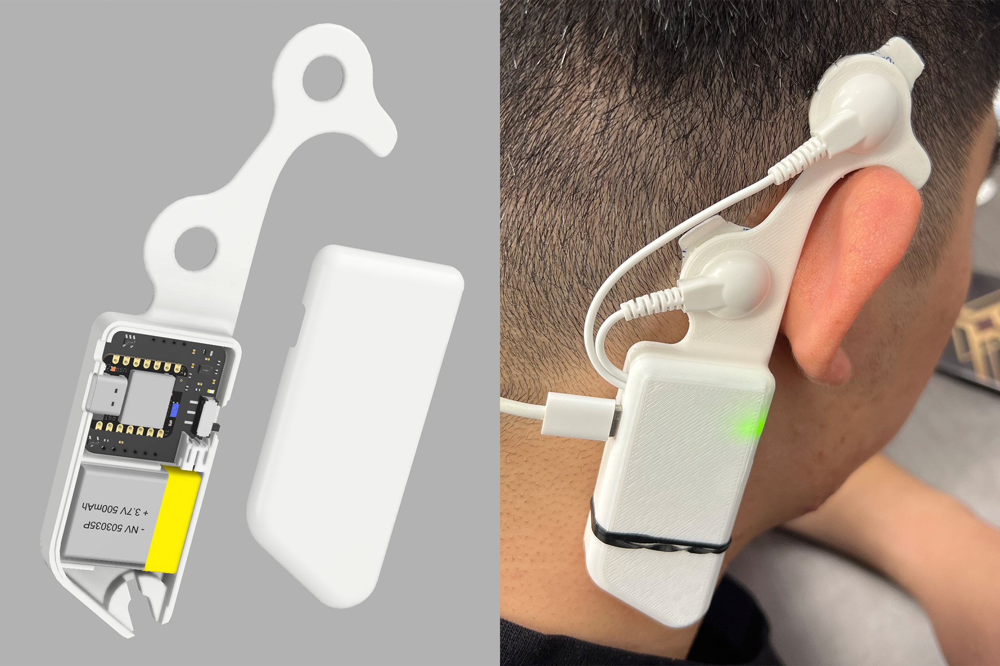
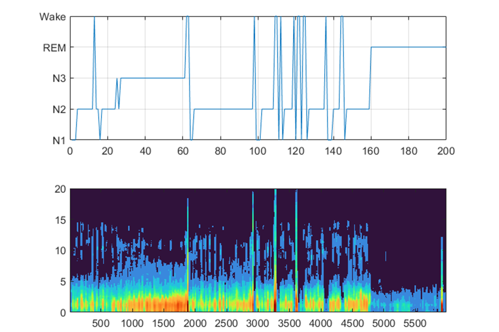
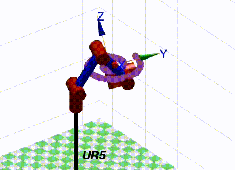
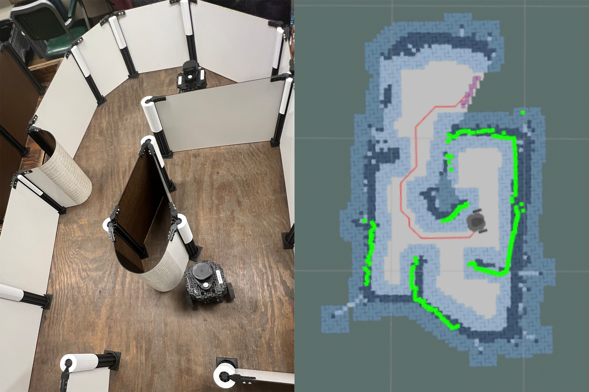
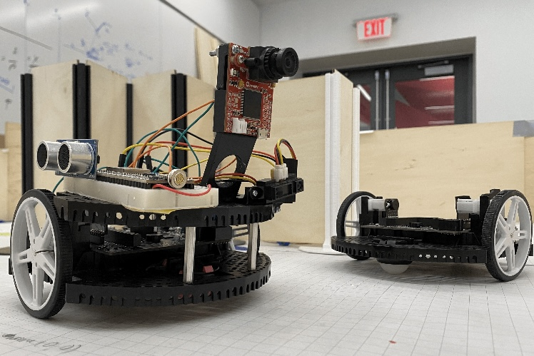
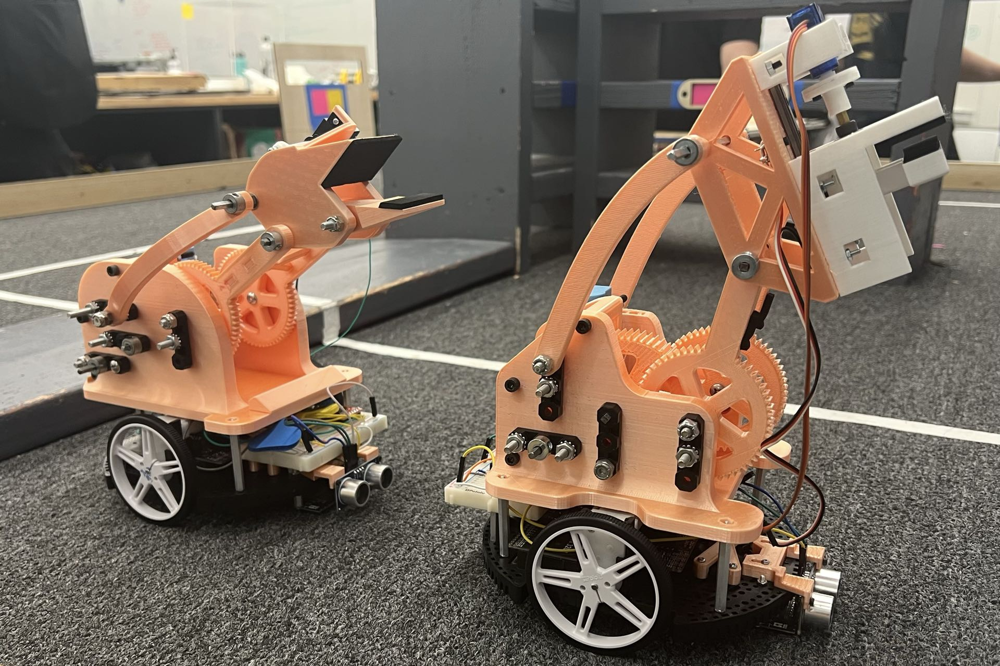

Perceptive Locomotion with Precise Foot Placement for Quadruped Robot
-
Introduced a versatile trajectory optimization method and real-time perception to generate dynamic motions
-
Established perception pipeline for environment perception, segmentation, and representation
-
[view more]

Humanoid Robot - Upper Torso
-
Introduced a physical structure of the robot torso with great compliance by using 3D printed TPU for the intervertebral discs of the spine
-
Built the actuating system with parallel manipulators for the robot torso to achieve 3‐DoF rotational movement
-
[view more]

Portable EEG Device for Auditory Closed-Loop Stimulation Study
-
Developed a portable single-channel EEG device with audio-stimulation for studying auditory closed-loop brain stimulation
-
Used the device to monitor the neural signal during overnight sleep
-
Collected the neural data for training sleep stage classifier

Deep Learning Model for Sleep Stage Scoring based on Raw Single-Channel EEG
-
Proposed an efficient deep learning model and a novel technique to effectively extract time‐invariant features for sequence residual learning in down‐streaming modules based on raw single-channel EEG
-
[code]
Class Projects
Dynamical Modeling of Serial Arm Robot

Autonomous Path Planning and Navigation Robot

Vision Based 3‐DoF Manipulator
[Video]

IR Based Mapping Robot

Autonomous Solar Panel Delivery Robot
